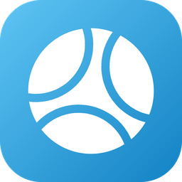

VBS · VolleyBall Scouting
VBS is a volleyball scouting program that writes files compatible with Data Volley. Free, for Windows 10 and 11, in Catalan, Spanish, English and German.
VBS is a free volleyball scouting program for Windows that writes Data Volley compatible files. This page needs JavaScript to show its texts and the download link.
11s.7#
*11ST- a07RT#
26.30#
*26AH/ a30BH#
15a45c#
*15AH45C#